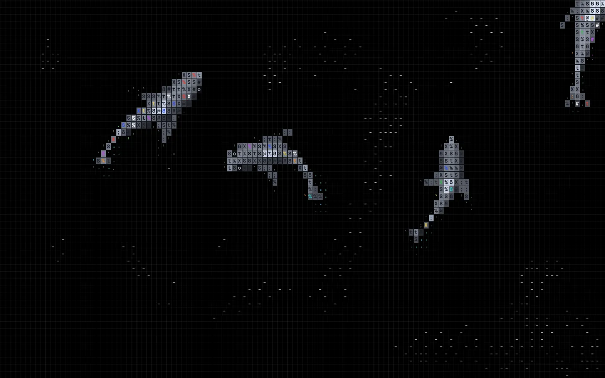
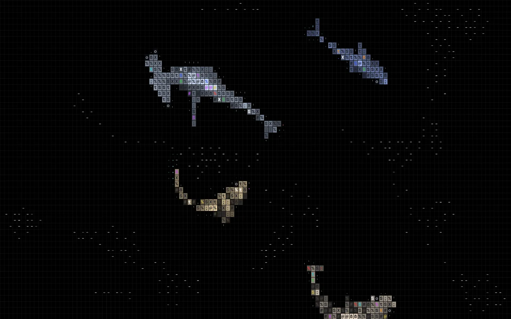
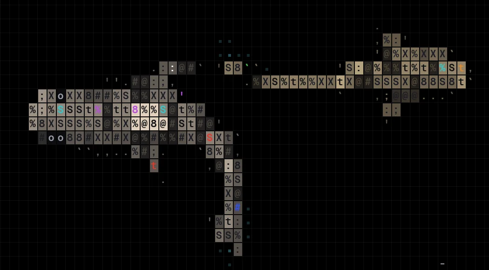

★ 58 stars 4 forks TypeScript 未声明许可证 零运行时依赖 Canvas 2D · 浏览器
数据通过公开 GitHub API 获取，时间 2026-10-20 10:20（UTC+8）。仓库建于 2026-10-20 05:54（UTC+8），共 2 个提交（first commit / chill readme），最后推送 05:58（UTC+8）。作者 X 上的演示帖（2026-10-20 03:01 UTC+8）约 3,000 赞、1,400 收藏。

vite build 后用无头 Chrome 截图（2026-10-20）。它是什么
README 只有一句介绍：Fish and sharks drawn as ASCII on a canvas. Zero dependencies.
（用 ASCII 在 canvas 上画鱼和鲨鱼，零依赖。）展开看源码，它其实是三件事叠在一起：
- 一个人工生命模拟（
world.ts）：几百条小鱼按物种结群巡游，几条鲨鱼饿了就去追落单的鱼，鱼被吃掉后会以新鱼群的形式从屏幕边缘游回来，数量保持稳定。 - 一个 ASCII 栅格化渲染器（
renderer.ts）：把鲨鱼的连续形体按单元格采样，决定每一格用什么字符、什么灰度、什么底色；鱼只占一格，画成一个短横-。 - 一个可嵌入的外壳（
engine.ts/react.tsx）：固定步长循环、自适应尺寸、离屏暂停、鼠标惊鱼、点击“拍水”、尊重系统的“减少动态效果”设置。
它跑在浏览器里，不是终端程序：字符是用 ctx.fillText 画到 Canvas 上的，字体取自 canvas 的 CSS font-family（演示页用 Geist Mono 600）。源码注释里多次出现 “the landing hero”“the sidebar”，看得出它原本是从某个产品落地页的首屏背景里抽出来的组件。作者在回复里说，做成仓库是因为figured others would too
（觉得别人也会想要）；被问到做法时只答了一句dither + ascii is the method
（抖动 + ASCII 就是方法）。
可选 8 种鲨鱼：classic、hammerhead（双髻鲨）、greathammer（无沟双髻鲨）、tiger（虎鲨，带斑纹）、zebra（豹纹鲨，带斑点和飘带尾）、mako（尖吻鲭鲨）、thresher（长尾鲨，尾鞭和身长相当）、nurse（铰口鲨）。每种都有自己的体形曲线、鳍位和肤色。
工作原理
1. 模拟与渲染分家，60 Hz 固定步长
OceanEngine 只做调度：物理固定按 1/60 秒一步推进，一帧最多补 4 步，跟不上就丢掉积压，避免“死亡螺旋”；渲染每帧一次。画布滚出视口时 IntersectionObserver 停掉循环；用户开了 prefers-reduced-motion，就先把生态快进 240 步（4 秒）让鱼群成形，然后只画一张静帧。
while (this.acc >= STEP && steps < MAX_STEPS) {
this.world.step(STEP);
this.acc -= STEP;
steps++;
}
if (steps === MAX_STEPS) this.acc = 0;
this.renderer.render(this.world, dt);2. 鱼群：boids + Couzin 分区 + 恐慌传染
每条鱼是经典的 Reynolds boid（分离 / 对齐 / 聚合），邻居查询走空间哈希，桶的大小等于感知半径。在此之上作者加了不少行为学细节：
- 个人空间按字符格计。间距写成“几个单元格”（例如沙丁鱼 1.8×1.1 格），并且是横宽竖窄的椭圆，所以每条鱼基本能独占一格，不会两个短横叠在一起。
- 身后有盲区。朝向两侧约 127° 以内可见，正后方看不见。
- 恐慌会传。直接看到鲨鱼（或鼠标）的鱼 alarm 升高，邻居以 0.86 的衰减系数一跳一跳地接力，所以只有边缘看得见鲨鱼时，整群也会一起炸开（注释称之为 “wave of agitation”）；恐慌时间距放大到 2.8 倍、聚合减弱、速度上限提高。
- 喷泉效应。逃跑方向不是正对着远离，而是往鲨鱼行进路线的两侧散开，再在身后合拢。
- 物种参数决定群形。注释引用 Couzin 等人 2002 年的结论：对齐强就成“丝带”，对齐弱就成“蜂群”，加一个切向力就成旋转的“饵球”。
| 物种 | 群大小 | 对齐 / 聚合 | 抖动 | 旋转（mill） | 呈现 |
|---|---|---|---|---|---|
| sardine 沙丁鱼 | 18–28 | 1.6 / 1.6 | 40 | 70 | 旋转饵球 |
| anchovy 鳀鱼 | 20–32 | 3.2 / 0.45 | 30 | 0 | 长丝带 |
| silverside 银汉鱼 | 12–20 | 2.4 / 1.1 | 35 | 0 | 紧凑定向群 |
| mackerel 鲭鱼 | 5–9 | 2 / 0.9 | 25 | 0 | 小队 |
| goby 虾虎鱼 | 8–12 | 0.35 / 1.4 | 110 | 0 | 乱糟糟的一团 |
环境里还有一股洋流：取一个缓慢漂移的流函数 ψ(x, y, t) 求旋度，得到无散度的速度场。它没有源和汇，所以只会推着鱼群绕圈，不会把它们都堆到某个角落。
// u = ∂ψ/∂y, v = -∂ψ/∂x with ψ = sin(a)cos(b) + 0.5 sin(c)
out.x = (-K2 * Math.sin(a) * Math.sin(b) + 0.5 * K3 * Math.cos(c)) * CURRENT_SCALE;
out.y = (-K1 * Math.cos(a) * Math.cos(b) - 0.5 * K3 * Math.cos(c)) * CURRENT_SCALE;3. 鲨鱼：转向行为 + 20 节“脊柱”
- 游法。惯性 + 漫游（wander）+ 追击 + 与其他鲨鱼保持距离。追击时瞄准鱼 0.35 秒后的位置；不饿时绕屏幕中心慢慢巡逻。
- 饥饿与挑食。饥饿值随时间上涨，吃一条降 0.16。选猎物时只看前方锥形范围，并对“所在空间桶里鱼多”的目标加罚分。密集鱼群会迷惑捕食者，所以落单的鱼先被挑走。
- 转弯半径随速度变大。鲨鱼不能原地掉头；猎杀冲刺时会更灵活。
- 给标题留白。屏幕中央有一块椭圆形“软禁区”，巡逻时会绕开（这是落地页首屏背景的痕迹）；鼻尖出屏后会被拉回来，所以偶尔身子探出画外，但不会一去不回。
- 身体是一条跟随链。头节点按航向前进，后面 19 节依次跟上，每个关节最多弯 0.16 弧度，所以身体最多弯成 C 形，不会对折。
angle = prevAngle + clamp(angleDiff(prevAngle, angle), -maxBend, maxBend);
nodes[k * 2] = px + Math.cos(angle) * seg;
nodes[k * 2 + 1] = py + Math.sin(angle) * seg;4. 渲染：把连续形体“采样”成字符格
这是项目最值得看的部分。单元格宽度取画布宽 / 124（限制在 8–13 px），高度是宽度的 1.45 倍。每帧按图层顺序画：黑底网格 → 尾迹 → 鱼 → 鲨鱼。
- 游动波。在模拟脊柱上叠一条从头到尾振幅递增的正弦行波，得到“渲染脊柱”，尾巴摆得最厉害。
- 体坐标。对每个候选点求到脊柱的最近点，得到 s（0 鼻尖 → 1 尾尖）和 v（横向距离）。每种鲨鱼用一条分段函数
halfWidth(s)描述半宽轮廓，胸鳍、腹鳍、尾鳍是体坐标里的三角形；镰刀形胸鳍再挖掉一个三角形凹口，双髻鲨的头翼单独判断。 - 超采样。每格测中心点加 4 个子采样点，覆盖率 ≥ 0.6 且中心命中就是“实心皮肤”格，否则是“边缘”格。边缘格只画
.',`或:;这类轻字符，相当于用字符做抗锯齿。 - 打光。假设光从左上来：背中线亮，两侧按 1 − across² 衰减，再按法线朝向加减。第一背鳍格固定最亮，眼睛是
o，鳃裂把亮度压一半，虎鲨的条纹和豹纹鲨的斑点用程序化图案生成。 - 字符跟着明暗走。实心格先
fillRect填一块灰色底（亮度 = 光照），再在上面用深色画字符。字符从下面这条渐变里取：亮处用稀疏字符，暗处用密集字符，让纹理顺着明暗走，而不是和明暗打架。
// Sparse glyphs on bright skin, dense glyphs in shadow, so the texture
// reinforces the shading instead of fighting it.
const SKIN_RAMP = ":;t%SX8#@";- 字符钉在皮肤上。每格的随机 key 由体坐标 (s, v) 和鲨鱼 id 哈希而来，而不是由屏幕坐标得来，所以鲨鱼游动时字符纹理跟着身体走，不会在原地闪烁。
- 受控的闪烁。颜色按错开的时钟每秒约 2.4 次重掷：约 9% 的格子换成 7 种强调色之一，约 4% 变白，于是皮肤会微微“闪”。远处（小）的鲨鱼整体压暗，先画，大鲨鱼从上面游过。
- 尾迹与事件。鱼和鲨鱼尾部往一张“能量场”里注入数值，每帧做一次 5 点模糊 + 指数衰减，超过阈值的格子亮起青色小点，像水波一样扩散后消失；鲨鱼吃鱼时留下一闪的红橙色
*/·；点击则在能量场上砸一个大圈。 - 性能小心思。鱼按 5 档亮度分桶，背景点用计数排序按颜色分桶，每个桶只设置一次
fillStyle；所有缓冲区都是预分配的 TypedArray，采样过程不分配对象。整个包构建后约 30 KB（gzip 约 12 KB）。
快速上手
1. 跑演示：需要 Node.js。仓库没有发布 npm 包，直接克隆即可。
git clone https://github.com/stackedlol/ascii-sharks
cd ascii-sharks
npm install && npm run dev # Vite 开发服务器
# 打开终端里提示的地址，例如 http://localhost:5173/2. 换鲨鱼：演示页读取 URL 参数 sharks，第一种最大，后面每种依次缩小 10%；不带参数就是四条 classic。
http://localhost:5173/?sharks=thresher,hammerhead,mako,nurse3. 嵌入自己的页面（README 示例）：给 canvas（或它的父元素）设一个等宽字体，字符就从这个字体里取。
import { OceanEngine } from "./src";
const engine = new OceanEngine(canvas, [{ kind: "hammerhead", size: 1 }]);
// 卸载时：engine.destroy();4. React：src/react.tsx 提供 <AsciiOcean sharks={…} />，带 "use client"，可以直接用于 Next.js。注意它不在 tsconfig 的检查范围里，项目本身也没把 react 列为依赖，要在你自己的 React 工程里使用。
本站实测（2026-10-20）：npm install 后 tsc --noEmit 通过，vite build 产出 29.8 KB JS。下面的截图就是这次本地构建的运行画面。
展示

?sharks=greathammer,tiger,zebra,mako：不同物种的肤色（冷灰、暖棕、沙黄、靛蓝）和体形差别一眼可辨。本站本地截图。
, ' . ` 这类轻字符，零星的彩色格是闪烁的强调色，o 是眼睛。本站本地截图。动起来的效果请看作者的演示视频帖（本站未转载视频）。作者另有一条浅色模式的预览，但当前仓库代码把背景写死为纯黑，没有浅色模式开关。
项目结构
| 文件 | 行数级别 | 作用 |
|---|---|---|
index.html / demo.ts | 很小 | 全屏黑底演示页；从 URL 读 ?sharks= |
src/engine.ts | ~140 行 | OceanEngine：固定步长循环、尺寸、指针输入、离屏暂停、减少动态效果 |
src/world.ts | ~660 行 | 人工生命模拟：鱼群 boids、恐慌传染、鲨鱼转向与脊柱、捕食、补员 |
src/species.ts | ~65 行 | 5 种饵鱼的速度、群大小、间距与行为权重 |
src/renderer.ts | ~930 行 | AsciiRenderer：8 种鲨鱼体形、超采样栅格化、打光、字符选择、尾迹场 |
src/math.ts | ~55 行 | smoothstep、角度差、整数哈希、无散度洋流 |
src/react.tsx | ~25 行 | <AsciiOcean> React 包装 |
src/index.ts | 3 行 | 导出 OceanEngine、AsciiRenderer、paintGrid、World 及类型 |
package.json | — | 只有 typescript、vite 两个开发依赖；脚本 dev / build / typecheck |
对我们的启发
- ASCII 是一层“渲染风格”，不是素材。它没有画任何字符画，而是先有连续的几何（脊柱 + 半宽曲线 + 鳍三角形），再逐格采样决定字符。我们做MG 风格样本或代码短片时，可以照这个思路，在任何 SDF / 矢量场景上加一个“字符化”后处理：覆盖率决定实心还是边缘，亮度决定字符密度。
- 纹理要钉在物体上。随机数用体坐标哈希而不是屏幕坐标，这是字符动画不显“脏”的关键。逐帧导出时尤其重要，否则每帧的字符都在跳。
- 形容词换成参数。“丝带”“饵球”“蜂群”这些群形，落到代码里就是对齐、聚合、mill 三个数。这和Opus 5.5 动效实验室、Huashu-motion 的经验一致：给 agent 写动效提示词，最好写成可调的数值和行为规则。
- 拿去做“代码即影片”还差一步。它现在依赖
Math.random()和实时requestAnimationFrame，不是确定性的render(t)。要逐帧导出视频，需要换成带种子的随机数，并按帧号固定步进（结构上已经是固定步长，改动不大），可参考 Prompt Motion 画廊里的 seek(t) 结构化模板，以及 Opus 5.5 视频大赏中音画全部用代码生成的做法。 - 克制本身是设计。纯黑底、极淡的网格、一种主体灰阶，强调色只占几个百分点并且会闪。很适合做文章题图或片头背景；找类似的克制范例，可以翻翻设计资源大赏。
- 可访问性和性能是默认项。减少动态效果时只显示静帧、离屏暂停、按 fillStyle 分桶批量绘制，这三条可以直接写进我们动效 skill 的检查清单。
相关阅读：Prompt Motion 画廊 · Anatomy：会动的机器解释图 · vibe-knowledge-film · 15 种 MG 风格
许可说明
截至 2026-10-20，仓库没有 LICENSE 文件，GitHub API 的 license 字段为空。按默认规则，这意味着作者保留全部权利：可以阅读和学习，但复制代码进自己的产品或再分发之前，应先征得作者同意。因此本页只做导读，正文中的英文短句和几段代码片段（每段不超过几行）仅为评述而引用，没有翻译或转载 README 全文和源码；配图是本站自己运行项目后截取的画面，没有转载作者的图片或视频。